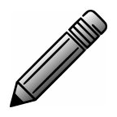
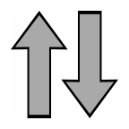
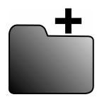

Main Page
The main page contains a list of all the lists you have created.
A list is opened by clicking the name of the list.
A long click on the list name will bring up a context menu that lets you
- Rename List
- Delete
- Create Copy
Create copy will make an identical copy of the list. This lets you create template list with e.g.
your basic groceries that you always buy.
Action Bar
- New list
- Create new list
 Help
Help- Launch this help view
-
 Settings
Settings
- Launch the settings view
-
Import List
- Import a list that was exported from the app. The list can come from any content provider
that your phone supports e.g. the SD card or Google Drive
List View
The list view is where you manage the content of your lists.
Edit mode
Toggles list editing mode.
Edit Mode
In edit mode you can add, remove, and move around items in the list.
When edit is disabled you can't add or remove items. It is still possible to check items and move
them.
Items are checked by clicking the check box.
The check box can be placed on either side of the screen, and optionally a touch anywhere on the
row can toggle the check box.
A long click on an item lets you rename it or delete it.
- Add item
- Add the item in the text box to the list.
-
Move item
- Drag item to new place in list.
Menu
- Check All Items
- Uncheck All Items
- Delete All Checked Items
- Undo Delete Item
- Sort Alphabetically
- Rename List
- Export List
Undo Delete Item will let you put back any deleted item as long as the list is active.
When you exit the list view the undo history of the list is lost
You can export lists to any content provider that your phone supports
e.g. the SD card or Google Drive
Settings
- Change Store
- Lets you switch to using a different backing store.
- Create New Store
- Lets you create a new, empty store.
- Grey out checked items
- Grey out checked items so it is easier to see the items that are left to do
- Strike through checked items
- Strike through checked items with a line
- Move checked items to bottom
- The checked items are shown after the unchecked items. This only effects the view, and
moving items
may not work as expected
- Left hand operation
- Move the check box and move button to the left side.
This makes it easier to manage the list with either hand
- Auto-delete checked items
- Delete items automatically when they are checked. You can undo the delete if necessary.
- Entire row toggles check box
- A touch anywhere on the row will toggle the check box
- Add new items at top of list
- By default items are added at the bottom of the list
- Show list in front of lock screen
- Lets you continue using the list even when the screen is locked.
You will still need to unlock the screen before you can access any other app
- Open latest list when app is started
- When the app is started it will automatically launch the last open list from the previous
session,
if it still exists.
- Warning before adding duplicate item to list
- When a newly entered item has a similar item already in the list, it will show a popup
asking for
confirmation before the new item is added to the list.
- Text size
- Set the text size of the list items. Use the system default or manually set Small, Medium or
Large